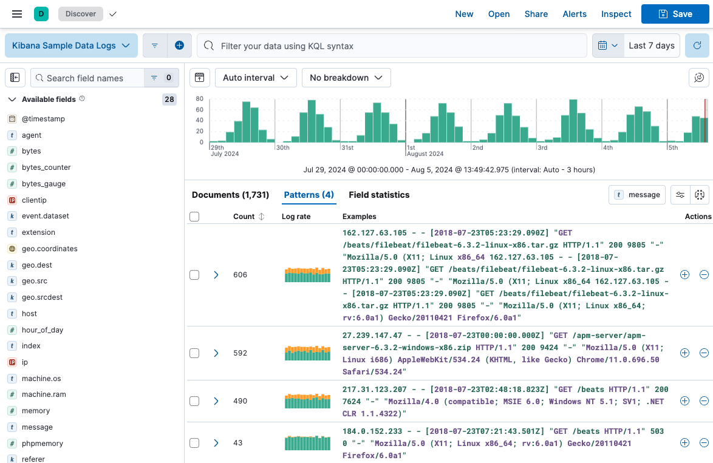

Run a pattern analysis on your log data
editLog pattern analysis helps you to find patterns in unstructured log messages and makes it easier to examine your data. It performs categorization analysis on a selected field of a data view, creates categories based on the data and displays them together with a chart that shows the distribution of each category and an example document that matches the category.
Log pattern analysis works on every text field.
This example uses the sample web logs data, or you can use your own data.
- Open the main menu, and click Discover.
- Expand the data view dropdown, and select Kibana Sample Data Logs.
- If you don’t see any results, expand the time range, for example, to Last 15 days.
- Click the Patterns tab next to Documents and Field statistics. The pattern analysis starts. The results are displayed under the chart. You can change the analyzed field by using the field selector. In the Pattern analysis menu, you can change the Minimum time range. This option enables you to widen the time range for calculating patterns which improves accuracy. The patterns, however, are still displayed by the time range you selected in step 3.

- (optional) Apply filters to one or more patterns. Discover only displays documents that match the selected patterns. Additionally, you can remove selected patterns from Discover, resulting in the display of only those documents that don’t match the selected pattern. These options enable you to remove unimportant messages and focus on the more important, actionable data during troubleshooting. You can also create a categorization anomaly detection job directly from the Patterns tab to find anomalous behavior in the selected pattern.